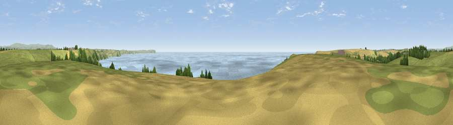

Viewpoint near Newton Ferrers
#2457 in England · top 6% of its area beats it · near Newton FerrersThe view, rendered

A 360° render of this exact spot computed from the terrain model, tree cover and land cover — summer colours, afternoon light, calibrated against photographs of famous viewpoints. Real trees, hedges and buildings will differ in detail.
The panorama
Grey silhouette: terrain skyline in each direction (720 bearings, Earth curvature and refraction included). Dashed green: skyline with trees (+15 m) and buildings (+8 m) as obstacles. Blue strip: how far the ground is visible on each bearing.
Where the view opens
Wedge length = distance to the farthest visible ground on that bearing (vegetation-aware). Rings at 10, 25 and 50 km.
What fills the view
50% water · 34% grassland · 11% cropland · 4% woodland ·
Angular shares of the visible panorama (visual magnitude), not map area. Landscape diversity 0.48 (0–1 Shannon).
Key numbers
More beautiful places nearby
The staircase of upgrades: each row has a higher view potential than everything closer. Driving times are estimates from straight-line distance, calibrated against real road routing — check an actual route before setting out.
| Place | Direction | Drive | Score |
|---|---|---|---|
| Viewpoint near Newton Ferrers | WSW · 1 km | ~4 min | 76.5 |
| Viewpoint near Newton Ferrers | ENE · 1 km | ~4 min | 79.5 |
| Viewpoint near Cawsand | W · 14 km | ~25 min | 81.0 |
| Viewpoint near Hope | ESE · 14 km | ~26 min | 84.4 |
| Viewpoint near East Prawle | ESE · 23 km | ~38 min | 84.6 |
| Pencarrow Head | W · 41 km | ~60 min | 86.0 |
| Viewpoint near Stenalees | W · 57 km | ~79 min | 88.0 |
| Viewpoint near Crackington Haven | NW · 64 km | ~87 min | 88.1 |
50.30012, -4.02485 · source: screening · position refined by local search. Computed location — check access rights before visiting.